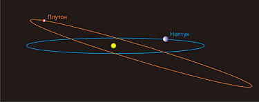
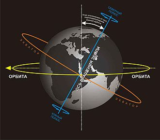
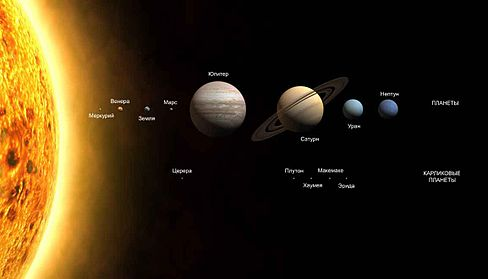
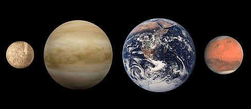

Планета
ТолкованиеПланета
У этого термина существуют и другие значения, см. Планета (значения).

Объекты размером с планету и их сравнение:
Верхний ряд: Уран и Нептун; нижний ряд:Земля, белый
карлик
Сириус B, Венера.

(увеличенная репродукция нижней части верхнего изображения):
Марс и Меркурий;
ниже:
Луна, карликовые
планетыПлутон и
Хаумеа.
Планета(греч. πλανήτης, альтернативная форма др.-греч. πλάνης — «странник») — это небесное тело, вращающееся по орбите вокруг звезды или её остатков, достаточно массивное, чтобы стать округлым под действием собственной гравитации, но недостаточно массивное для начала термоядерной реакции, и сумевшее очистить окрестности своей орбиты от планетезималей
Термин «планета» — древний и имеет связи с историей, наукой, мифологией и религией. В текстах на русском языке встречается с XI века, когда это название в форме «планита» было упомянуто в «Изборнике Святослава» 1073 года, где также были указаны небесные тела, подходившие к тому времени под это определение: Слъньце (Солнце), Ермис (Меркурий), Афродити (Венера), Луна, Арис (Марс), Зеус (Юпитер), Кронос (Сатурн)[3]. Во многих ранних культурах планеты рассматривались как носители божественного начала или, по крайней мере, статуса божественных эмиссаров. По мере того, как научные знания развивались, человеческое восприятие планет изменилось в немалой степени и благодаря открытию новых объектов и обнаружению различий между ними.
В понимании учёных птолемеевской эпохи планеты вращались вокруг Земли по идеально круглым орбитам. Несмотря на то, что идея обратного — что на самом деле Земля подобно другим планетам вращается вокруг Солнца — выдвигалась не один раз, лишь в XVII столетии она была обоснована результатами наблюдений, с помощью первых построенных человеком телескопов, сделанных Галилео Галилеем. Благодаря тщательному анализу данных Иоганн Кеплер обнаружил, что орбиты планет не круглые, а эллиптические. Поскольку инструменты наблюдений улучшались, астрономы установили, что, как и Земля, планеты вращаются вокруг наклонённой к плоскости эклиптики оси и обладают такими особенностями, свойственными Земле, как полярные шапки из льда и смена сезонов. С рассветом космической эры близкие наблюдения позволили обнаружить и на других планетах Солнечной системы вулканическую деятельность, тектонические процессы, ураганы и даже присутствие воды.
Начиная с 1992 года, с открытием сотен планет вокруг других звёзд, названных экзопланетами, учёные начали понимать, что планеты можно обнаружить в Галактике везде и многие их характеристики схожи с аналогичными особенностями планет Солнечной системы. В 2006 году Международный астрономический союз в своём решении дал новое определение планеты, что вызвало как одобрение, так и критику со стороны учёного сообщества, продолжаемую некоторыми учёными до сих пор. На октябрь 2012 года известно уже 843 экзопланеты в 665 планетных системах (в том числе 126 мульти-планетных), в пределах от планет-гигантов до планет земной группы[4].
Содержание
- 1 Планетные системы
- 1.1 Состав планетных систем
- 1.1.1 Объекты планетарной массы
- 1.1.2 Планета-сирота
- 1.1.3 Субкоричневые карлики
- 1.1.4 Планеты-спутники и планеты поясов
- 1.2 Движение планет по орбите
- 1.2.1 Наклон оси
- 1.2.2 Вращение
- 1.2.3 «Чистая орбита»
- 1.3 Эволюция планетных систем
- 1.4 Солнечная система
- 2 Процессы
- 2.1 Формирование планеты
- 2.1.1 Аккреционный сценарий
- 2.1.2 Трудности аккреционного сценария
Планетные системы
Состав планетных систем
Основная статья: Экзопланета

Экзопланеты по годам открытия, на ноябрь 2010 Первое подтверждённое открытие экзопланеты на орбите вокруг звезды главной последовательности произошло 6 октября 1995 года, когда Мишель Мейор и Дидье Кьело из Женевского университета объявили об обнаружении планеты около 51 Пегаса. Из более чем 500 известных экзопланет, большинство обладают массой, сопоставимой или много раз большей, чем у Юпитера, хотя известны и менее крупные[5]. Наименьшие из открытых экзопланет до настоящего времени были обнаружены у остатка звезды, известного как пульсар, под обозначением PSR 1257+12[6]. Известна, по крайней мере, дюжина экзопланет между 10 и 20 земными массами[5], как, например, те, что вращаются вокруг Мю Жертвенника, 55 Рака и GJ 436[7]. Эти планеты иногда называют «нептуны», потому что по своей массе они близки к Нептуну (17 земных)[8]. Другая категория экзопланет называется «сверхземлями», возможно, землеподобные миры, более крупные, чем Земля, но меньшие, чем Уран или Нептун. На настоящий момент известно примерно 20 возможных сверхземель и в их числе: Глизе 876 d (примерно 6 масс Земли)[9], OGLE-2005-BLG-390L b и MOA-2007-BLG-192L b, холодные, ледяные миры, обнаруженные при помощи гравитационного микролинзирования[10][11], COROT-7b, с диаметром около 1,7 земных (что делает её самой маленькой известной сверхземлёй из найденных), но с орбитальным расстоянием в 0,02 а. е., что, вероятно, означает наличие расплавленной поверхности с температурой около 1000—1500 °C[12], и пять из шести планет на орбите вокруг соседнего красного карлика Глизе 581. Экзопланета Глизе 581 d примерно в 7,7 раз массивнее Земли[13], тогда как Глизе 581 c массивнее Земли в 5 раз, и, как первоначально думали, мог быть первой землеподобной экзопланетой, расположенной в так называемой «обитаемой зоне» около звезды[14]. Однако, более детальные наблюдения позволили установить, что планета слишком близка к звезде, чтобы быть пригодной для жизни, и самая дальняя планета в системе, Глизе 581 d, хотя и много холоднее Земли, могла бы быть потенциально пригодной для жизни при наличии в атмосфере достаточного количества парниковых газов[15].

Сравнение размеров HR 8799 c (серый) с Юпитером. Большинство экзопланет, обнаруженных к настоящему времени, размером с Юпитер, или крупнее До сих пор не до конца ясно, напоминают ли открытые экзопланеты газовые гиганты и планеты земной группы Солнечной системы, или же они не совсем похожи, и некоторые из них относятся к доселе теоретическим типам, как, например, аммиачные гиганты или углеродные планеты. В частности, множество недавно открытых экзопланет, известных как горячие юпитеры, обращаются экстремально близко к материнским звёздам, по почти круговым орбитам. Поэтому они получают значительно больше звёздной радиации, чем газовые гиганты в Солнечной системе, что ставит под вопрос, являются ли они одним и тем же типом планет. Существует также подкласс горячих юпитеров, называемый хтонические планеты, обращавшиеся на орбите вокруг материнских звёзд так близко, что звёздная радиация сдула их атмосферу. Несмотря на то, что немало горячих юпитеров находятся в процессе потери атмосферы, до сих пор подтверждённых хтонических планет обнаружено не было[16].
Более подробные данные наблюдений за экзопланетами требуют нового поколения инструментов, включая космические телескопы. В настоящее время COROT ищет экзопланеты на основании наблюдений за изменениями яркости у звёзд вызванного прохождениями экзопланет. Множество проектов в последнее время предполагают создание космических телескопов для поиска экзопланет, сопоставимых по размерам и массе с Землёй. Первый из них уже реализован NASA: Кеплер — первый телескоп созданный специализировано для этих целей. Пока не имеют точной даты реализации проекты Terrestrial Planet Finder, Space Interferometry Mission и НЦКИ (Франция) — PEGASE. New Worlds Mission может работать заодно с «Джеймсом Веббом». Однако программа финансирования многих из этих проектов пока не утверждена. В 2007 году был получен первый спектральный анализ экзопланет (HD 209458 b и HD 189733 b)[17][18]. Наличие достаточного количества землеподобных планет является важной составной частью уравнения Дрейка, которое может позволить оценить число разумных коммуникативных цивилизаций, которые существуют в нашей галактике[19].
Объекты планетарной массы Объект планетарной массы, ОПМ или Планемо — это небесное тело, чья масса позволяет ему попадать в диапазон определения планеты, то есть его масса больше, чем у малых тел, но недостаточна для начала термоядерной реакции по образу и подобию коричневого карлика или звезды. По определению все планеты — объекты планетарной массы, но цель этого термина в том, чтобы описать небесные тела, не соответствующие тому, что типично ожидается от планеты. Например, планеты в «свободном плавании», не обращающиеся вокруг звезд, которые могут быть «планетами-сиротами», покинувшими свою систему, или объекты, появившиеся в ходе коллапса газового облака — вместо типичной для большинства планет аккреции из протопланетного диска (их обычно называют субкоричневыми карликами).
Планета-сирота Основная статья: Планета-сирота Некоторые компьютерные модели формирования звёзд и планетарных систем предполагают, что определённые «объекты планетарной массы» могут покинуть свою систему и уйти в межзвёздное пространство[20]. Некоторые учёные утверждали, что такие объекты уже нашли свободно блуждающими в космосе и их следует классифицировать как планеты, хотя другие предположили, что они могут быть и мало-массивными звёздами
Субкоричневые карлики Основная статья: Субкоричневый карлик Звёзды могут образовываться посредством гравитационного коллапса газового облака, но меньшие объекты также могут сформироваться таким способом. Объекты планетарной массы, образовавшиеся таким способом, называют субкоричневыми карликами. Субкоричневые карлики могут находиться в «свободном плавании», как, возможно, Cha 110913-773444, или на орбите вокруг более крупного объекта, как, возможно, 2MASS J04414489+2301513.
В течение короткого времени в 2006 астрономы считали, что нашли двойную систему из таких объектов, Oph 162225-240515, которые исследователи описали как «планемо», или «объекты планетарной массы». Однако дальнейший анализ позволил установить, что их массы, скорее всего, больше 13 масс Юпитера, что превращает их в систему из коричневых карликов
Планеты-спутники и планеты поясов Некоторые крупные спутники сходны по размерам с планетой Меркурий или даже превосходят её. Например, Галилеевы спутники и Титан. Алан Стёрн утверждает, что местоположение не должно иметь для планеты значения, и только геофизические признаки должны быть приняты во внимание при присуждении объекту статуса планеты. Он предлагает термин планета-спутник для объекта размером с планету, обращающегося вокруг другой планеты. Аналогично объекты размером с планету в Поясе астероидов или Поясе Койпера также могут считаться планетами согласно Стёрну
Движение планет по орбите
См. также:Законы Кеплера
Орбита Нептуна в сравнении с орбитой Плутона. Заметна более удлинённая орбита у Плутона (эксцентриситет), так же как и высокий угол наклона к эклиптике
Согласно рабочему определению все планеты вращаются вокруг звёзд, что лишает статуса планеты любые потенциальные «планеты-одиночки». В Солнечной системе, все планеты обращаются по своим орбитам в том направлении в каком вращается Солнце (против часовой стрелки, если смотреть со стороны северного полюса Солнца). Хотя по крайней мере одна экзопланета, WASP-17b, вращается по орбите вокруг звезды в направлении противоположном её вращению[27]. Период, за который планета обращается вокруг звезды, называется сидерическим или годом[28]. Планетарный год в немалой степени зависит от расстояния планеты от звезды; чем дальше планета находится от звезды, тем большую дистанцию она должна пройти, и тем медленнее она движется, так как менее затронута гравитацией звезды. Поскольку никакая орбита не является совершенно круглой, расстояние между звездой и планетой на орбите варьируется в течение сидерического периода. Точку орбиты где планета ближе всего к звезде называют периастром (перигелий в Солнечной системе), тогда как самая дальняя точка орбиты называется апоастром (афелий в Солнечной системе). Поскольку в периастре планета ближе к светилу, потенциальная энергия гравитационного взаимодействия переходит в кинетическую и её скорость увеличивается подобно тому как брошенный высоко камень — ускоряется приближаясь к земле, а когда планета находится в апоастре, её скорость уменьшается, подобно тому как тот же брошенный вверх камень замедляется в верхней точке полёта[29].
Орбита любой планеты определяется несколькими элементами:
Эксцентриситет определяет, насколько планетарная орбита вытянута. У планет с более низким эксцентриситетом более округлые орбиты, тогда как планеты с высоким эксцентриситетом имею орбиту, приближённую скорее к эллипсу. У планет Солнечной системы очень низкие эксцентриситеты, и, таким образом, почти круглые орбиты[28]. Кометы и объекты пояса Койпера (как и многие экзопланеты) имеют очень высокий эксцентриситет
Иллюстрация большой полуоси Большая полуось это дистанция от планеты до средней точки на полпути вдоль её орбиты (см. изображение). Эта дистанция не то же самое, что апастрон, потому что звезда находится в одном из фокусов орбиты планеты, а не точно в центре[28]. Наклонение это угол между плоскостью его орбиты и плоскостью отсчёта (базовой плоскостью). В Солнечной системе за эту плоскость принято считать орбиту Земли, называемую эклиптикой[32]. Для экзопланет эта плоскость известна как Небесная плоскость, это плоскость на обзорной линии с места на Земле[33]. Восемь планет Солнечной системы находятся очень близко к плоскости эклиптики; тогда как кометы и объекты пояса Койпера, как, например, Плутон, находятся под намного более высокими углами[34]. Точки, где планета пересекает эклиптику и спускается выше или ниже оной, называются соответственно восходящими и нисходящими узлами орбиты[28]. Долгота восходящего узла это угол между базовой плоскостью и восходящим узлом орбиты. Аргумент периастра (или перигелий в Солнечной системе) это угол между орбитальным восходящим узлом и его ближайшей точкой к звезде на орбите вокруг неё
Наклон оси

Наклон земной оси приблизительно 23°
Планеты также имеют, помимо прочего, разные углы осевого наклона: они лежат под определённым углом к
плоскости экватора
материнской звезды. Именно поэтому количество света, получаемого тем или иным полушарием, меняется в
течение года; когда
северное полушарие оказывается от звезды дальше, чем южное, и наоборот. На каждой планете есть смена
сезонов; изменение
климата в течение года. Время, когда одно из полушарий находится ближе или дальше всего от Солнца
называется
солнцестоянием. У полушарий на протяжении всей планетарной орбиты случается два солнцестояния; когда
одно из полушарий
находится в летнем солнцестоянии, и день там самый длинный, и когда одно из полушарий находится в
зимнем солнцестоянии,
с его чрезвычайно коротким днём. Разное количество тепла и света получаемое каждым полушарием служит
причиной ежегодных
изменений в погодных условиях. Осевой наклон Юпитера чрезвычайно низкий, и сезонные изменения там
минимальны; Уран, в
противоположность обладает осевым наклоном настолько экстремально высоким, что практически
«обращается вокруг Солнца на
боку», и одно из его полушарий либо постоянно под солнечным светом, либо постоянно находится в
темноте во время
солнцестояний[35]. Что касается экзопланет, то их осевые наклоны неизвестны наверняка, однако,
большинство «горячих
юпитеров» обладают, по-видимому, чрезвычайно низким наклоном, что является результатом близости к
звезде[36].
Наклон земной оси приблизительно 23° Планеты также имеют, помимо прочего, разные углы осевого наклона: они лежат под определённым углом к плоскости экватора материнской звезды. Именно поэтому количество света, получаемого тем или иным полушарием, меняется в течение года; когда северное полушарие оказывается от звезды дальше, чем южное, и наоборот. На каждой планете есть смена сезонов; изменение климата в течение года. Время, когда одно из полушарий находится ближе или дальше всего от Солнца называется солнцестоянием. У полушарий на протяжении всей планетарной орбиты случается два солнцестояния; когда одно из полушарий находится в летнем солнцестоянии, и день там самый длинный, и когда одно из полушарий находится в зимнем солнцестоянии, с его чрезвычайно коротким днём. Разное количество тепла и света получаемое каждым полушарием служит причиной ежегодных изменений в погодных условиях. Осевой наклон Юпитера чрезвычайно низкий, и сезонные изменения там минимальны; Уран, в противоположность обладает осевым наклоном настолько экстремально высоким, что практически «обращается вокруг Солнца на боку», и одно из его полушарий либо постоянно под солнечным светом, либо постоянно находится в темноте во время солнцестояний[35]. Что касается экзопланет, то их осевые наклоны неизвестны наверняка, однако, большинство «горячих юпитеров» обладают, по-видимому, чрезвычайно низким наклоном, что является результатом близости к звезде[36].
Вращение Помимо того, что планеты обращаются по своей орбите вокруг звезды, они ещё и вращаются вокруг своей оси. Период вращения планеты вокруг оси известен как сутки. Большинство планет Солнечной системы вращаются вокруг своей оси в том же направлении в каком обращаются вокруг Солнца, против часовой стрелки, если смотреть со стороны северного полюса Солнца, кроме Венеры, которая вращается по часовой стрелке[37] и Урана[38], экстремальный осевой наклон которого порождает споры, какой полюс считать южным и какой северным, и вращается ли он против часовой или по часовой стрелке[39]. Однако, какого бы мнения ни придерживались стороны, вращение Урана ретроградное относительно его орбиты.
Вращение планеты может быть вызвано несколькими факторами ещё на стадии формирования. Изначально угловой момент может быть задан индивидуальными угловыми моментами аккрецируемых объектов на ранних стадиях формирования планеты. Аккреция газа газовыми гигантами также может способствовать заданию углового момента планете. Наконец, во время последних стадий формирования, случайный процесс протопланетарного прироста может почти непредсказуемо изменить ось вращения планеты[40]. Есть большая разница между длиной дня у планет: если Венере требуется 243 земных дня для одного оборота вокруг оси, то газовым гигантам хватает нескольких часов[41]. Период вращения для экзопланет не известен. Однако близкое расположение к звёздам горячих юпитеров означает, что на одной стороне планеты царит вечная ночь, а на другой вечный день (орбита и вращение синхронизированы)[42].
«Чистая орбита» Основная статья: Чистая орбита Один из критериев, который позволяет определить небесное тело как классическую планету, — чистые от иных объектов орбитальные окрестности. Планета, которая очистила свои окрестности, накопила достаточную массу, чтобы собрать или, наоборот, разогнать все планетезимали на своей орбите. То есть, планета обращается по орбите вокруг своего светила в изоляции (если не считать её спутников и троянцев), в противоположность тому, чтобы делить свою орбиту с множеством объектов подобных размеров. Этот критерий статуса планеты был предложен МАС в августе 2006 года. Этот критерий лишает такие тела Солнечной системы как Плутон, Эрида и Церера статуса классической планеты, относя их к карликовым планетам[1]. Несмотря на то, что этот критерий относится пока только к планетам Солнечной системы, некоторое количество молодых звёздных систем, находящихся на стадии протопланетарного диска, имеют признаки «чистых орбит» у протопланет
Эволюция планетных систем
Солнечная система
Планеты и карликовые планеты Солнечной системы. (размеры для сравнения, расстояния не соблюдены)

Землеподобные планеты: Меркурий, Венера, Земля, Марс (размеры для сравнения, расстояния не соблюдены)
Четыре газовых гиганта: Юпитер, Сатурн, Уран, Нептун (размеры для сравнения, расстояния не соблюдены) Основная статья:Солнечная система Основная статья:Список планетоподобных объектов Согласно текущему определению термина планета, которое дал МАС, в Солнечной системе находятся восемь классических планет и пять карликовых планет[44]. В порядке увеличения расстояния от Солнца классические планеты расположены так:
- Юпитер самый крупный — его масса равна 318 земным. Меркурий самый маленький, с массой всего лишь 0,055 от земной. Планеты Солнечной системы можно разделить на 2 группы на основании их характеристик и состава:
- Земного типа. Планеты, похожие на Землю, в основе своей состоящие из горных пород: Меркурий, Венера, Земля и Марс. С массой в 0,055 от земной, Меркурий — самая маленькая планета земной группы (и вообще самая маленькая из известных на сегодняшний день планет) в Солнечной системе, тогда как Земля — самая крупная землеподобная планета в Солнечной системе.
- Газовые гиганты. Планеты, в значительной степени состоящие из газа, и значительно более массивные, чем планеты земной группы: Юпитер, Сатурн, Уран и Нептун. Юпитер, с 318 земными массами — крупнейшая планета в Солнечной системе. Сатурн, не намного меньший, весит «всего» 95 земных масс. Ледяные гиганты, включают в себя Уран и Нептун. Это подкласс газовых гигантов, которых отличает от большинства газовых гигантов «небольшая» масса (14-17 земных) и значительно меньшие запасы гелия и водорода в атмосферах наравне со значительно большими пропорциями горных пород и льда.
- Карликовые планеты. До решения 2006 года несколько объектов, обнаруженных астрономами, были предложены к присвоению им статуса планет МАС. Однако в 2006 все эти объекты были определены как карликовые планеты — объекты, отличающиеся от планет. В настоящее время МАС признаёт 5 карликовых планет в Солнечной системе: Цереру, Плутон, Хаумеа, Макемаке и Эриду. Ещё несколько объектов пояса астероидов[источник не указан 684 дня] и пояса Койпера рассматриваются как текущие кандидаты, и ещё 50 косвенно подходят под определение. Возможно, когда пояс Койпера будет исследован полностью, таких объектов будет обнаружено до 200. Карликовые планеты во многом разделяют особенности планет, хотя и остаются известные различия — а именно то, что они недостаточно массивны, чтобы расчистить свои орбитальные окрестности. По определению, все карликовые планеты являются членами какой-нибудь популяции. Церера — крупнейший объект в астероидном поясе, в то время как Плутон, Хаумеа и Макемаке — объекты пояса Койпера, а Эрида — рассеянного диска. Майк Браун и другие учёные уверены, что более 40 транснептуновых объектов будут впоследствии признаны МАС как карликовые планеты, согласно действующему определению